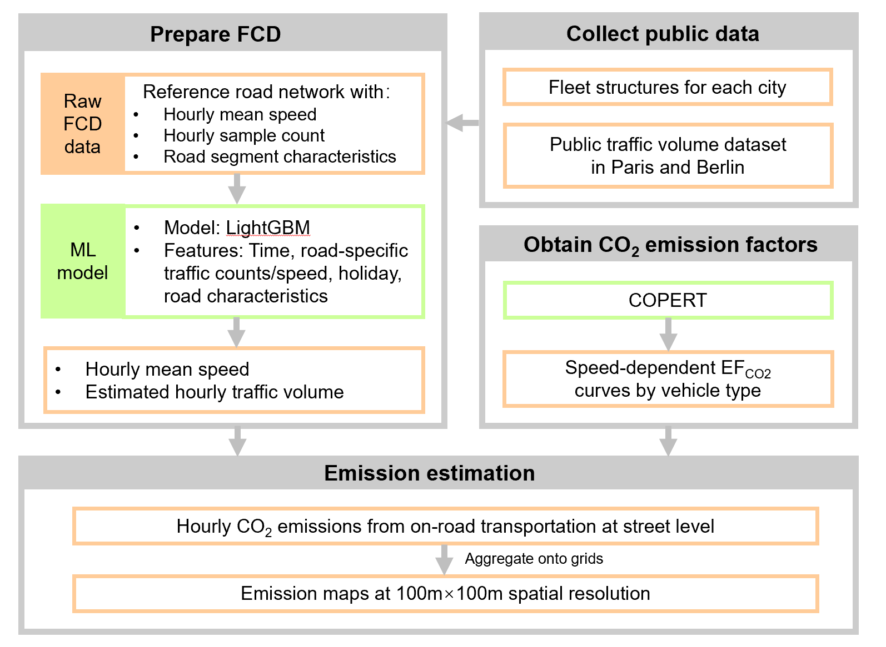
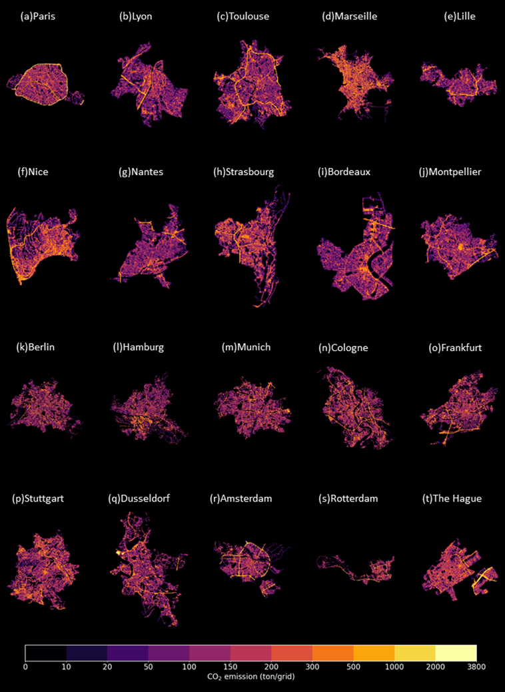
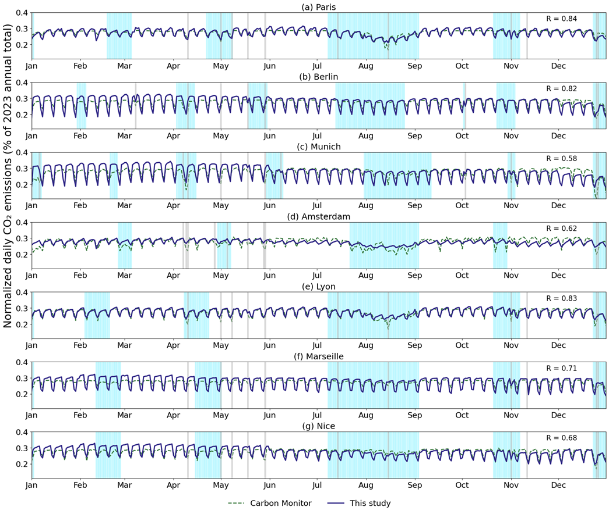

Background
On-road transportation is a major contributor to CO2 emissions in cities, and high-resolution CO2 traffic emission maps are essential for analyzing emission patterns and characteristics.
Method
We used commercial Floating Car Data (FCD) based on anonymized GPS signals periodically reported by individual vehicles, providing hourly information on mean speed and on the number of GPS sample counts per street. Machine learning models were developed to fill FCD data gaps and convert sample counts into actual traffic volumes, and the COPERT model was used to estimate speed- and vehicle type dependent emission factors. Hourly emissions, initially estimated at the street level, were aggregated to 100 × 100 m grid cells. Our approach enhances the spatial and temporal characterization of CO2 emissions in on-road transportation compared to the conventional method used in gridded inventories, indicating the potential of FCD data for near-real-time urban emission monitoring and timely policy making.

Fig 1. Roadmap of this study
Wrap-Up
Annual on-road CO2 emissions across the 20 European cities in 2023 ranged from 0.4 to 7.6 Mt CO2, with emissions strongly correlated with urban area (R² = 0.97) and, to a lesser extent, population size (R² = 0.72). Spatially, emissions are either highly concentrated along major highways in cities such as Paris and Amsterdam or more evenly distributed in cities such as Berlin and Bordeaux, highlighting the need for context-specific mitigation strategies. Temporally, this study shows the CO2 emission fluctuations due to holiday periods, weekly activity cycles, and distinct usage profiles of different vehicle types. Due to the low latency of FCD, this approach could support near-real-time traffic emission mapping in the future.

Fig 2. Annual CO2 emission map of 20 cities at 100m × 100m resolution in 2023.

Fig 3. Normalized daily CO2 emission of seven cities in 2023. Y-axis represents each day's CO2 emissions divided by the city's total emissions in 2023. The light blue and grey shades represent school holidays and public holidays, respectively. The y-axis represents each day's CO2 emissions divided by the city's total emissions in 2023.